Robodex
Every robot the forge knows, numbered in the order it learned them. Badges come only from recorded gate runs. A robot with no run says so in grey.

Andino
Ground — wheeled · Differential roverFail
TurtleBot3 Burger
Ground — wheeled · Differential roverPass
TurtleBot3 Waffle Pi
Ground — wheeled · Differential roverNot gated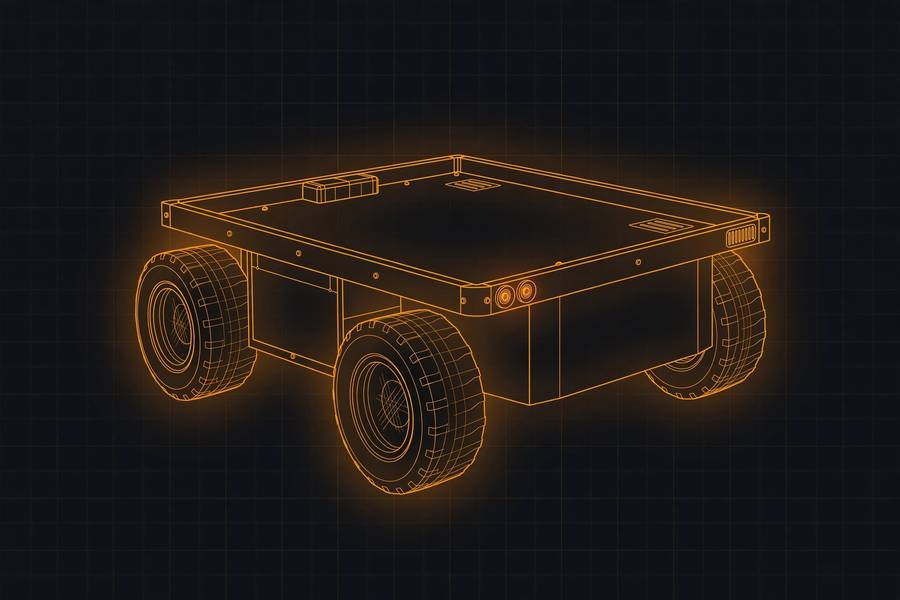
Pathfinder
Ground — wheeled · Skid-steer roverPass
PX4 X500
Aerial · QuadcopterNot gated
Crazyflie 2.1
Aerial · QuadcopterNot gated
Unitree Go2
Legged · QuadrupedNot gated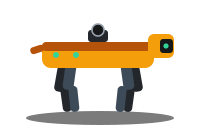
Mini Pupper
Legged · QuadrupedNot gated
Unitree G1
Legged · HumanoidNot gated
ROBOTIS OP3
Legged · HumanoidNot gated
OpenManipulator-X
Stationary · Robotic armNot gated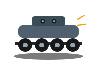
RobotForge illustrations — drawn for this index; photos and gate badges live on each robot's page.
Take it apart in 3D → orbit, explode and export the Burger kit as parametric CAD
Parts catalogue
49 real parts with datasheet-sourced specs, grouped by class. These are what the forge assembles robots from and checks parts lists against.
actuators (6)
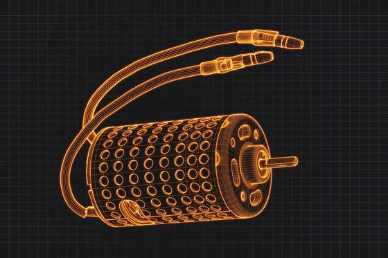
Brushed motor 540 size
The standard 540-size brushed motor from RC cars.
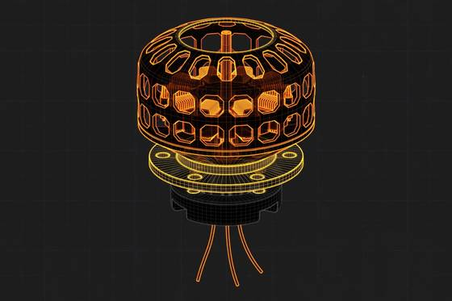
Brushless motor 2207 1960 KV
An FPV quad motor: small, light, spins very fast.
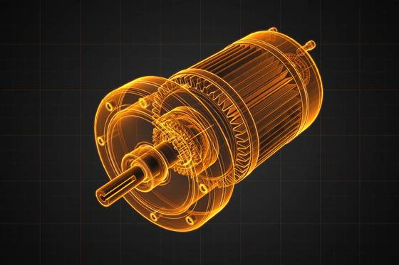
DC gearmotor 12 V (37 mm class)
A DC motor with a built-in gearbox: slow, strong turning for wheels.
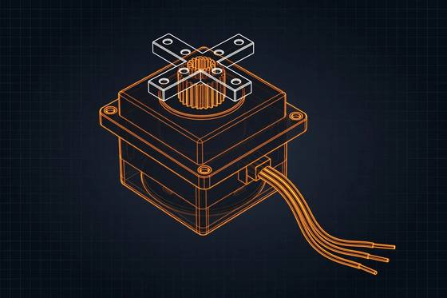
MG996R servo
A metal-gear hobby servo that turns to a commanded angle.
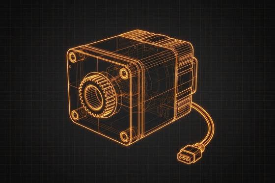
STS3215 serial bus servo (Feetech)
A serial-bus servo: many chain on one wire and report their position back.
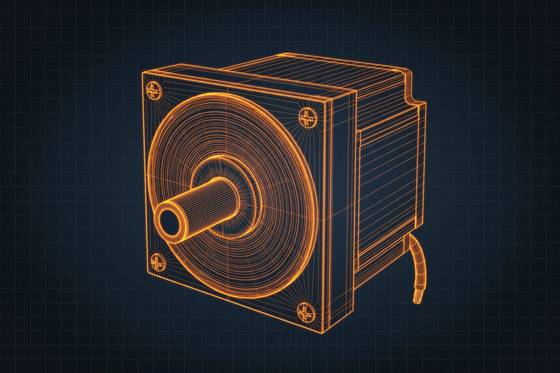
Stepper motor NEMA 17
A stepper motor that moves in precise 1.8-degree steps.
cables & connectors (2)
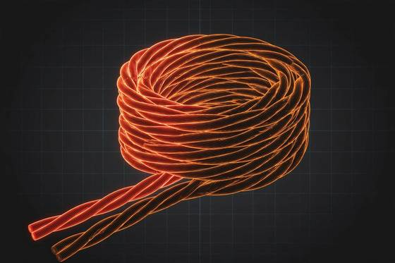
Silicone wire 14 AWG (per metre)
Flexible silicone-insulated wire thick enough for battery current.
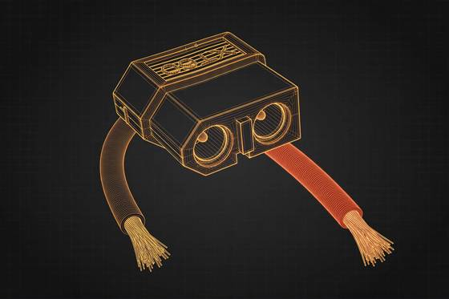
XT60 pigtail lead
A short lead with the yellow XT60 battery connector already soldered on.
cameras & sensors (5)
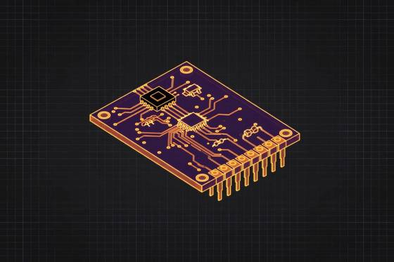
BNO055 9-DOF IMU breakout
A 9-axis motion sensor with on-chip orientation fusion (compass + gyro + accelerometer).
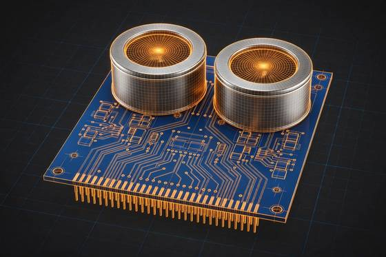
HC-SR04 ultrasonic ranger
The two-eyed sonar module: pings and times the echo to measure distance.
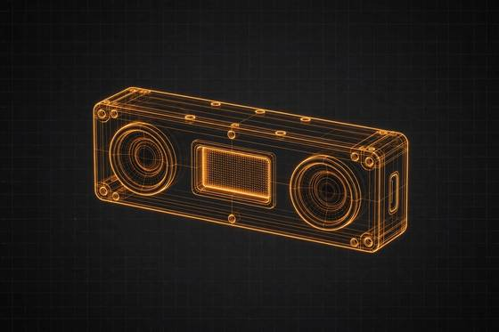
Intel RealSense D435 depth camera
A stereo depth camera: sees colour plus distance per pixel.
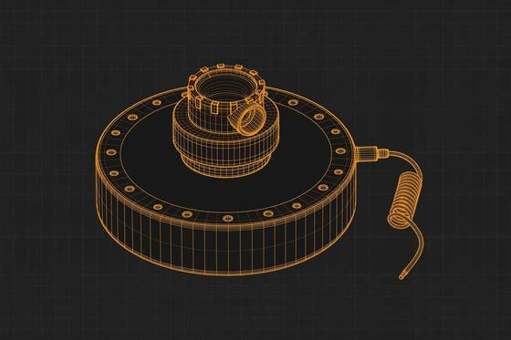
RPLIDAR A1 2D lidar
A spinning 2D laser scanner — it sweeps a room and reports distances all around.
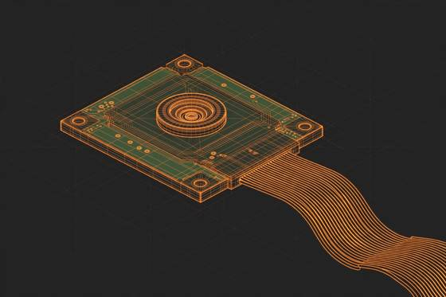
Raspberry Pi Camera Module V2 (8 MP)
The little ribbon-cable camera made for the Raspberry Pi.
comms (2)
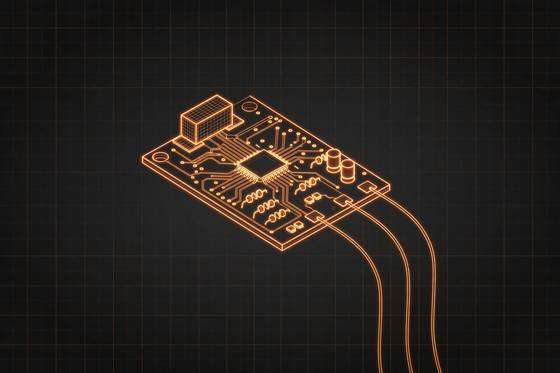
ExpressLRS receiver
A tiny ExpressLRS radio-control receiver.
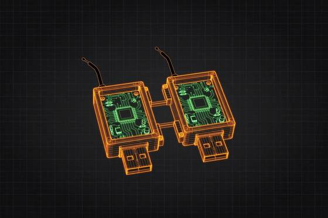
SiK telemetry radio pair (915 MHz)
A pair of long-range radio modems that make a wireless serial link.
custom boards (1)
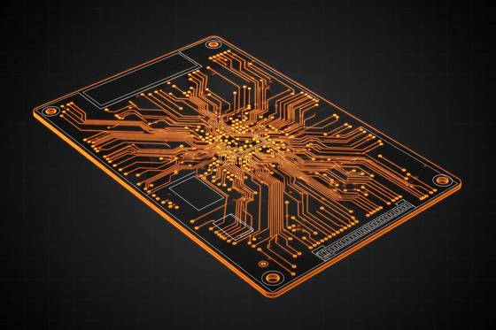
Custom PCB (KiCad import)
Your own circuit board, designed in KiCad and fabricated to order.
drivers (4)
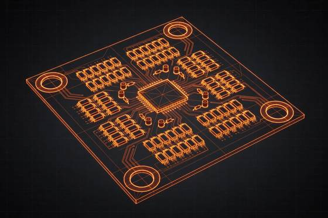
4-in-1 ESC 45 A (BLHeli_S class)
Four brushless speed controllers on one board for a quadcopter.
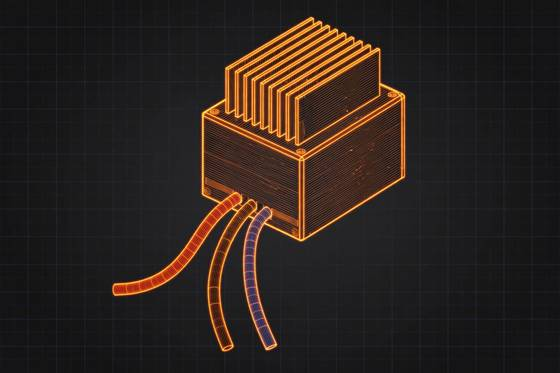
Brushed ESC 60 A (QuicRun 1060 class)
A single brushed speed controller for an RC car's main motor.
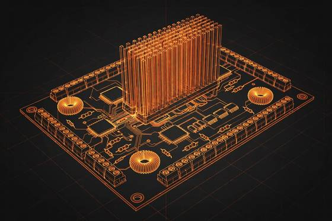
L298N dual motor driver module
The classic red dual H-bridge module for two DC motors or one stepper.
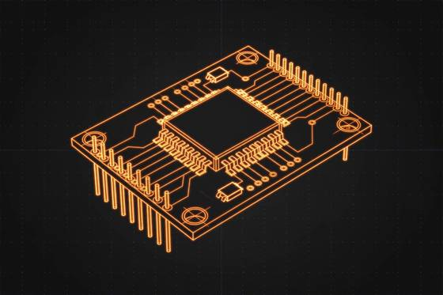
TB6612FNG dual motor driver
A small dual motor driver: runs two DC motors forward, reverse and brake from logic signals.
end effectors (1)
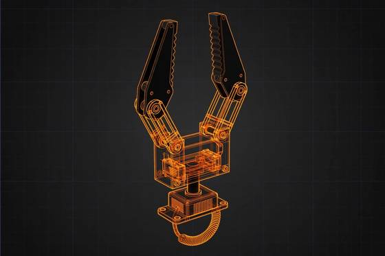
2-finger parallel gripper kit
A two-finger parallel gripper kit (servo not included).
flight control (1)
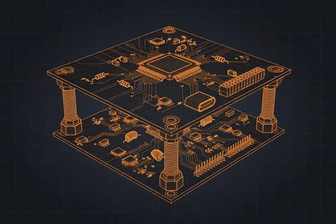
Flight controller stack F405
Flight-controller board stack that stabilises a quadcopter.
materials (2)
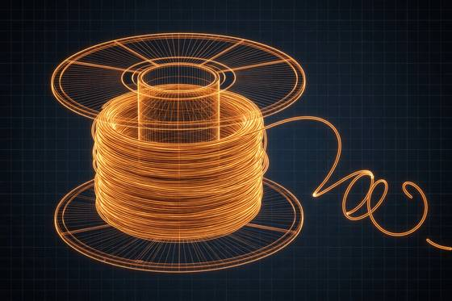
PETG filament 1.75 mm, 1 kg
A tougher, slightly flexible printing filament.
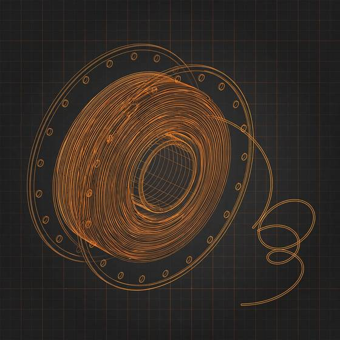
PLA filament 1.75 mm, 1 kg
The standard easy-print 3D printing plastic, on a 1 kg spool.
memory & storage (1)
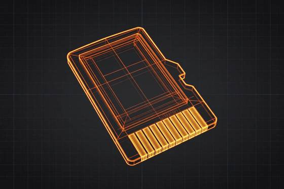
microSD card 128 GB (A2/V30)
The removable flash card a Raspberry Pi boots from.
microcontrollers (3)
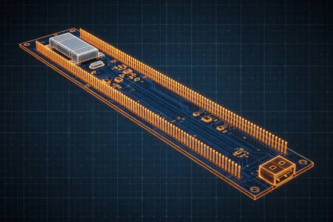
ESP32 development board
A Wi-Fi/Bluetooth microcontroller board — the robot's reflexes.
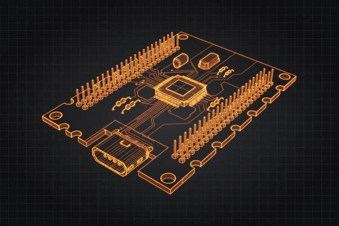
Raspberry Pi Pico (RP2040)
Raspberry Pi's cheap dual-core microcontroller board.
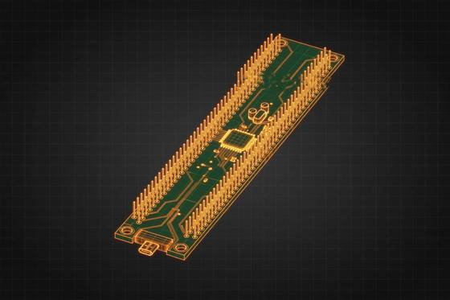
Teensy 4.1
A very fast microcontroller board popular for precise motion control.
power (6)
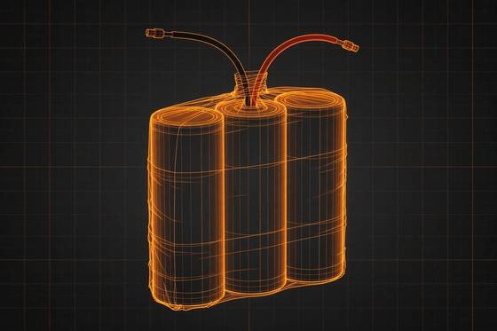
18650 Li-ion pack 3S (3 cells)
Three cylindrical 18650 cells in series — 11.1 V of robot power.
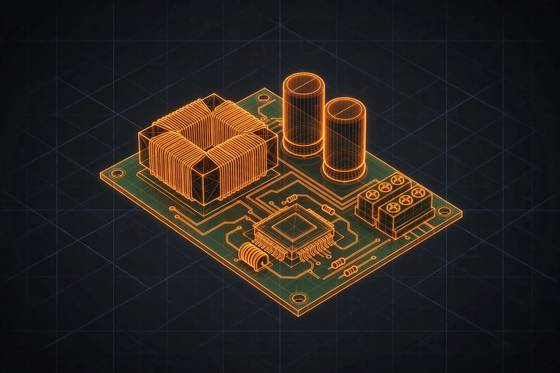
Buck converter 5 V / 5 A
Steps a higher battery voltage down to a clean 5 V.
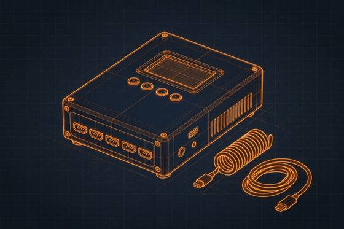
LiPo balance charger
Charger that keeps every cell in a LiPo pack at the same voltage.
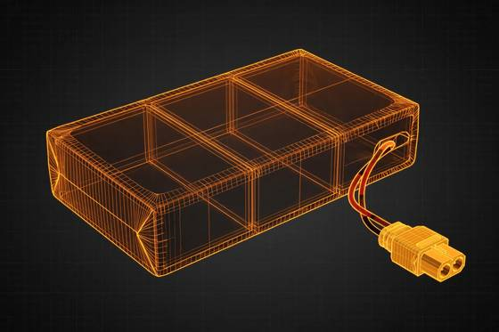
LiPo battery 3S 2200 mAh
A 3-cell LiPo pack, 11.1 V — the classic small-robot battery.
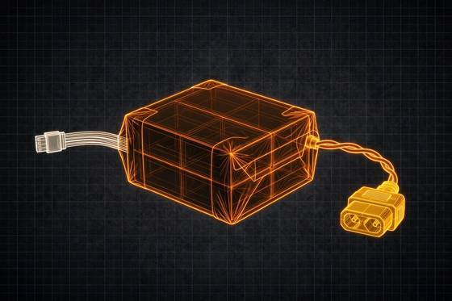
LiPo battery 4S 1500 mAh (5-inch quad)
A smaller 4-cell LiPo pack sized for a 5-inch quadcopter.
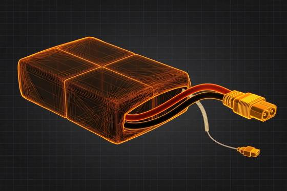
LiPo battery 4S 5200 mAh
A rechargeable lithium-polymer battery pack: 4 cells in series, 14.8 V, lots of capacity.
air propulsion (1)
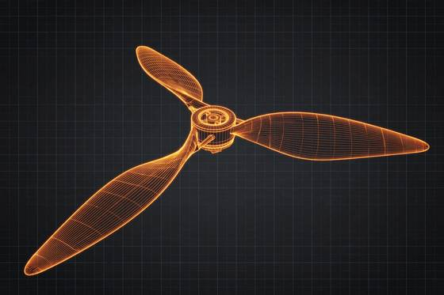
Propeller 5x4.0x3 tri-blade
A 5-inch tri-blade propeller for FPV quads.
safety & protection (3)
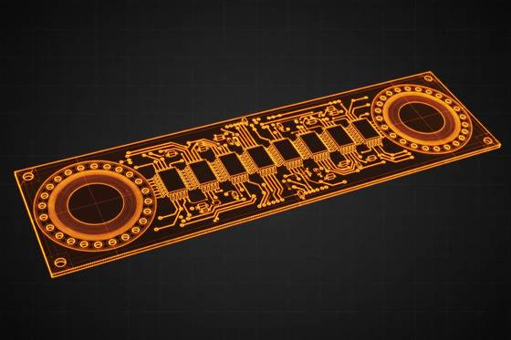
BMS protection board 4S 40 A
A battery-management board that protects a 4-cell pack from over/under-voltage.
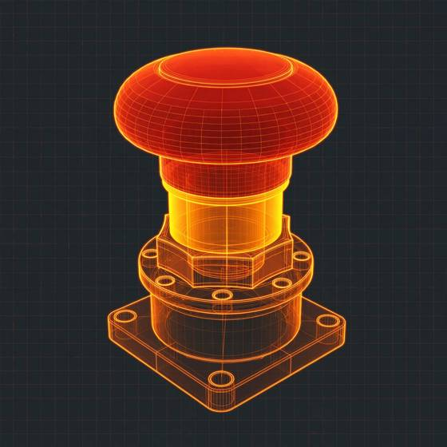
Emergency stop button (latching)
A big latching red button that cuts power when slapped.
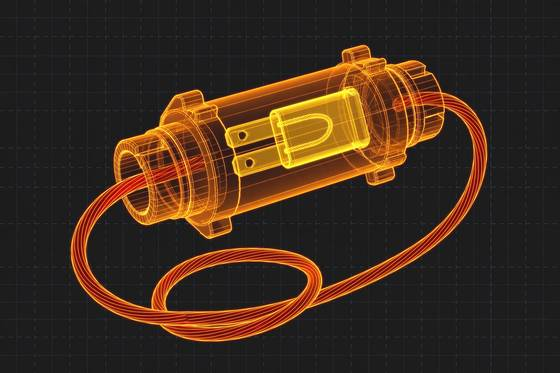
Inline blade fuse holder + fuse
A fuse holder wired into the battery's main lead.
single-board computers (1)
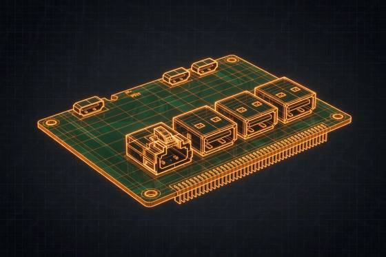
Raspberry Pi 5
A full Linux computer the size of a credit card.
structure (7)
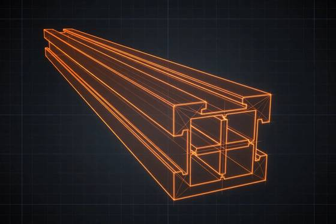
Aluminium extrusion 2020 (per metre)
Slotted aluminium profile, 20 by 20 mm, sold by the metre.
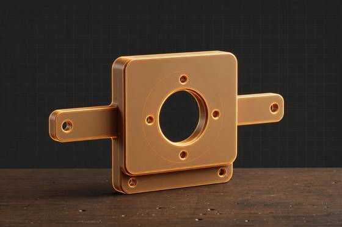
Camera bracket (3D-printed)
A small flat bracket that holds a camera facing forward.
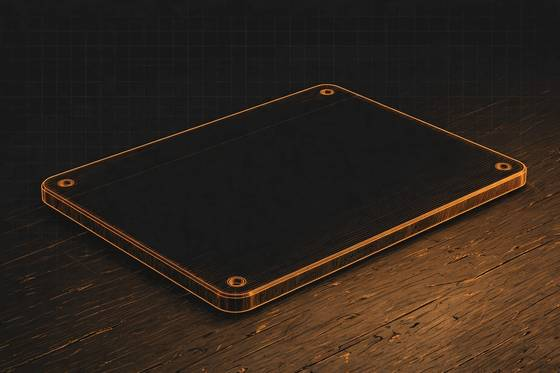
Chassis plate (3D-printed)
The flat deck everything bolts onto — in RobotForge it is generated for your robot, ready to print.
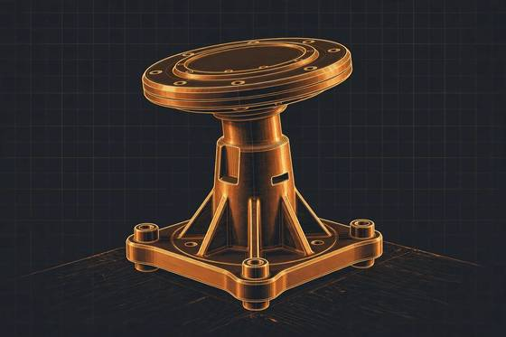
Lidar mount post (3D-printed)
A post that raises the 2D lidar above the deck for a clear 360-degree view.
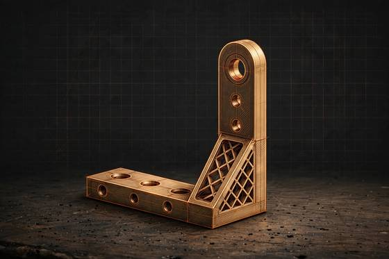
Motor mount bracket (3D-printed)
A small bracket that holds a gearmotor at exactly axle height.
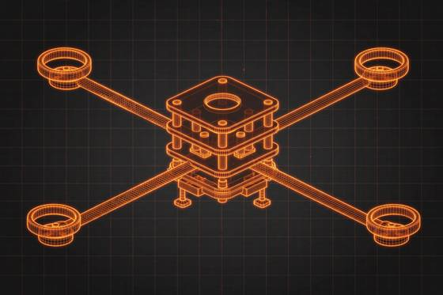
Quadcopter frame 5 inch (carbon)
A carbon-fibre frame sized for 5-inch propellers.
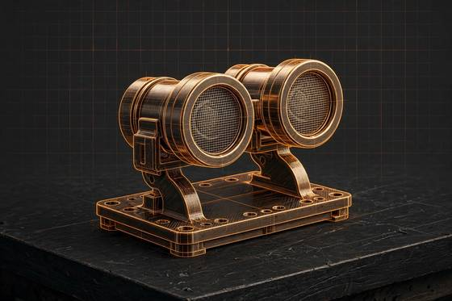
Ultrasonic bracket (3D-printed)
A twin-can bracket sized for an HC-SR04-style ultrasonic ranger.
wheels (3)
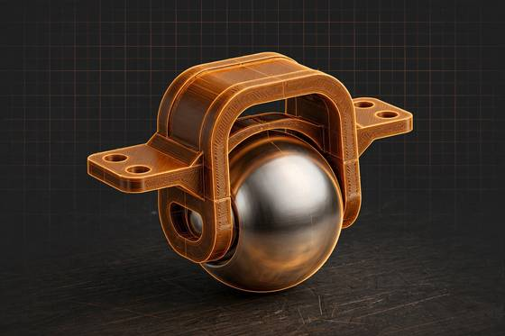
Ball caster
A free-rolling ball that supports the end of a two-wheel robot without steering it.
Mecanum wheel 100 mm
A wheel with angled rollers that lets a robot slide sideways.
Wheel 100 mm diameter
A 100 mm robot wheel — the size on the Pathfinder spec.
No parts match that search.